Text → OpenSCAD code generation with fully deterministic geometric
rewards: compile (0.2) + watertight (0.1) + single component (0.1) + chamfer-distance
similarity (0.6) against procedurally generated reference meshes. No LLM judges.
Environment on the Prime Intellect Hub · install: prime env install
ashantanu/cad-env
21 examples (levels 1–4) · up to 8 rollouts each · max 2048 tokens ·
reward in [0, 1] · API-errored rollouts excluded. Click a model for its full
reference-vs-generated gallery.
Every example is generated from a fresh parameter draw — prompt and
reference program come from the same draw, so labels are exact by construction and
the supply is unlimited and contamination-free. Sample of 40 generated
objects (hover for the prompt):
.")
L1 · Create a cuboid measuring 30mm x 15mm x 70mm (width x depth x he…

L2 · A solid box 35mm x 20mm x 50mm with a rectangular notch 16mm wid…

L3 · A stepped circular shaft standing upright, made of 3 stacked coa…
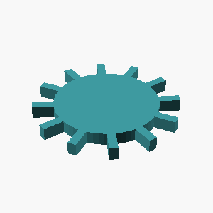
L4 · A gear-like disc 6mm thick with radius 25mm, with 12 rectangular…
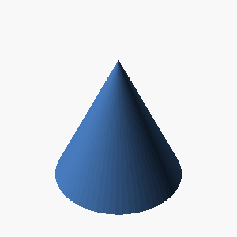
L1 · Create an upright cone: base diameter 20mm, height 20mm, apex at…
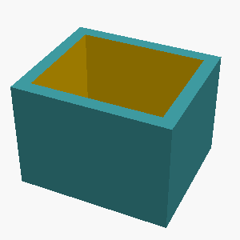
L2 · An open-top rectangular container with outer dimensions 35mm x 3…
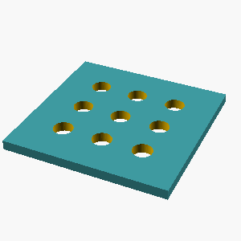
L3 · A rectangular plate 100mm x 100mm, 6mm thick, with a 3 by 3 grid…
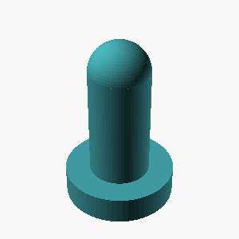
L4 · A monument-like shape: a circular base plate of radius 20mm and …
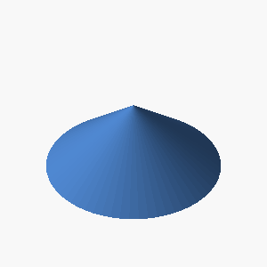
L1 · Create an upright cone: base diameter 80mm, height 30mm, apex at…
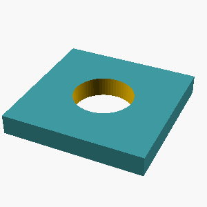
L2 · Create a 70mm by 70mm plate of thickness 10mm with a centered 30…
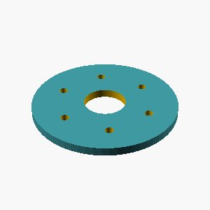
L3 · A flat washer 4mm thick with outer radius 35mm and a central hol…
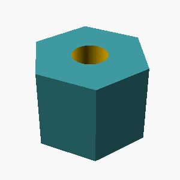
L4 · A hexagonal prism (like a nut) 28mm tall, measuring 35mm across …
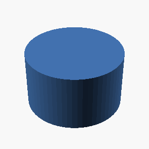
L1 · Create an upright cylinder of height 35mm and diameter 60mm.…
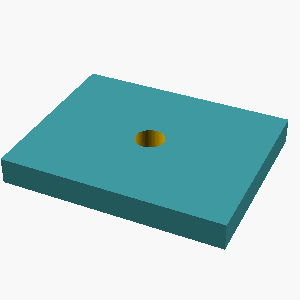
L2 · A flat rectangular plate 75mm x 60mm, 9mm thick, with a circular…
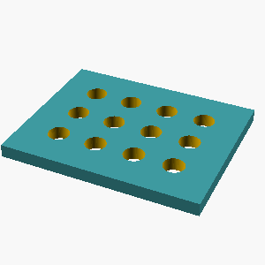
L3 · A rectangular plate 75mm x 60mm, 5mm thick, with a 4 by 3 grid o…
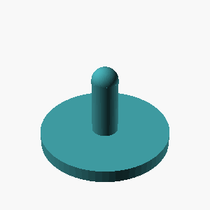
L4 · A monument-like shape: a circular base plate of radius 40mm and …
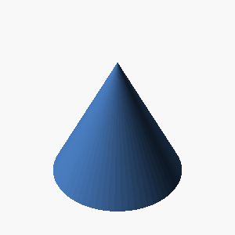
L1 · A solid cone 65mm tall with a base radius of 35mm, point facing …
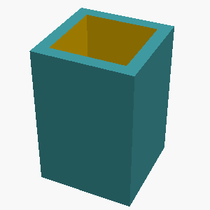
L2 · Create a box-shaped tray 40mm x 40mm x 60mm on the outside, holl…
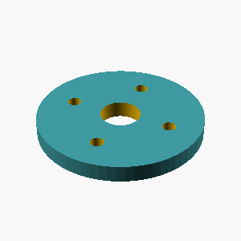
L3 · A flat washer 5mm thick with outer radius 25mm and a central hol…
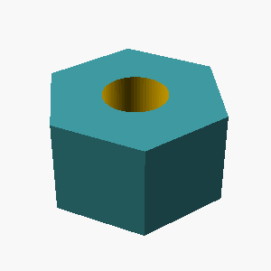
L4 · A hexagonal prism (like a nut) 18mm tall, measuring 30mm across …
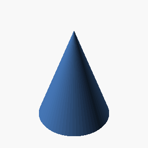
L1 · A solid cone 65mm tall with a base radius of 25mm, point facing …
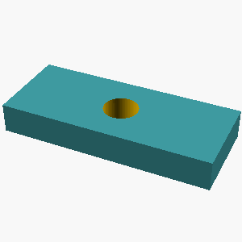
L2 · A flat rectangular plate 85mm x 35mm, 12mm thick, with a circula…
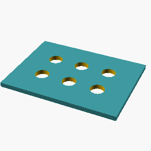
L3 · A rectangular plate 100mm x 75mm, 4mm thick, with a 3 by 2 grid …
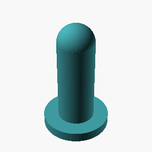
L4 · A monument-like shape: a circular base plate of radius 20mm and …
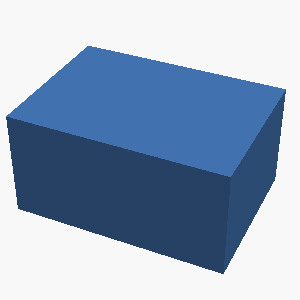
L1 · Create a cuboid measuring 70mm x 50mm x 35mm (width x depth x he…
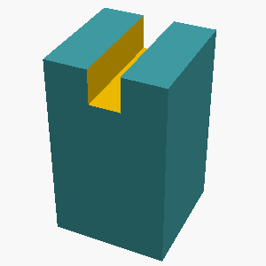
L2 · A solid box 30mm x 30mm x 50mm with a rectangular notch 8mm wide…
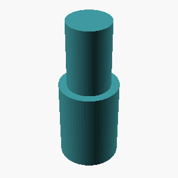
L3 · A stepped circular shaft standing upright, made of 2 stacked coa…
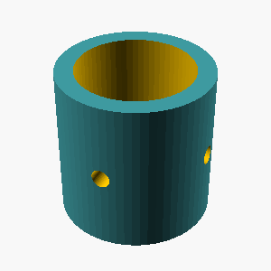
L4 · An upright hollow tube 50mm tall, outer radius 25mm, inner radiu…

L1 · A solid sphere with a radius of 10mm.…
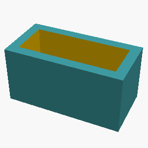
L2 · An open-top rectangular container with outer dimensions 60mm x 3…
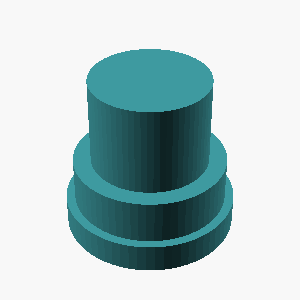
L3 · A stepped circular shaft standing upright, made of 3 stacked coa…
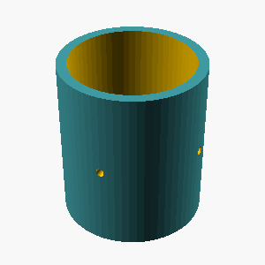
L4 · An upright hollow tube 80mm tall, outer radius 35mm, inner radiu…

L1 · Create a sphere 40mm in diameter.…
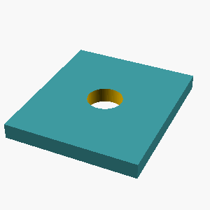
L2 · Create a 60mm by 70mm plate of thickness 7mm with a centered 16m…
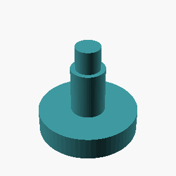
L3 · A stepped circular shaft standing upright, made of 3 stacked coa…
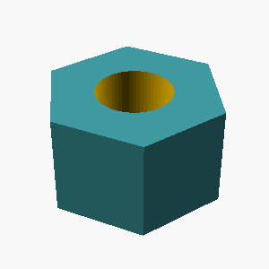
L4 · A hexagonal prism (like a nut) 16mm tall, measuring 25mm across …
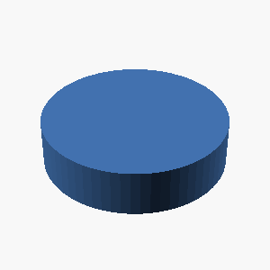
L1 · A solid cylinder 15mm tall with a radius of 30mm, standing uprig…
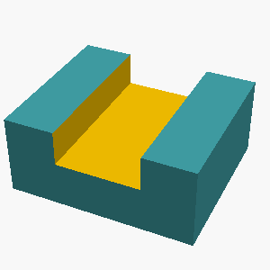
L2 · A solid box 70mm x 60mm x 30mm with a rectangular notch 32mm wid…
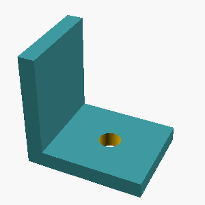
L3 · An L-shaped bracket 50mm wide: a horizontal leg 65mm long and a …
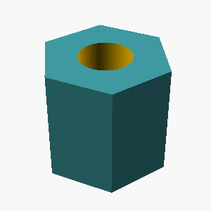
L4 · A hexagonal prism (like a nut) 30mm tall, measuring 30mm across …